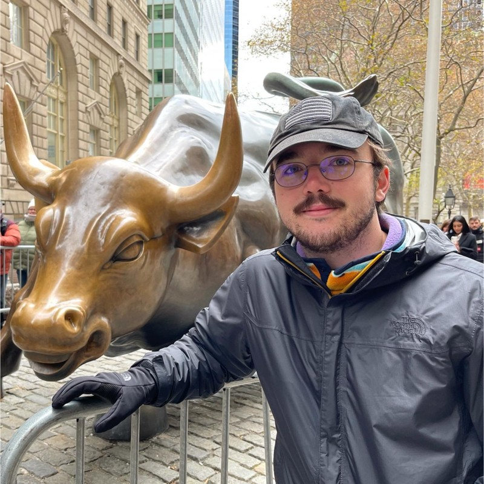

I am a computer science and mathematics student at the University of Kentucky.
I am inspired by the intersection of Computer Graphics, Geometry, and Artificial Intelligence.
As a researcher I have explored this intersection first hand. With experience working in both a biomedical imaging
laboratory, and a sustainable manufacturing institute building computer vision driven machine learning models.
Professionaly I have also had the amazing experience to work at Twitch building tools for mobile gamers to enjoy streaming
just as much as their PC and console counter parts. Before that I worked at Intel and the University of Kentucky in various roles.
I hope to continue my career pursuing a Ph.D. in Computer Graphics, continuing to discover the new ways for this intersection
of fields to inspire people through Film, Games, and Sustainable Solutions.
In my free time I spend a lot of time cooking, skating, and travelling. I am also an avid
lover of video games and Pixar movies. I spend a lot of time reading and thinking of ways we
can create better learning environments for students of all ages. :)
My academic research falls into primairly two areas: Computer Graphics and Artificial Intelligence.
As a undergraduate research assistant at UK I worked in both imaging and machine learning. While working
in a
My experience as a software developer has a lot of breadth. I have had the unique opportunity to be involved with many areas of software development. From processor design and validation, devops, web development, and currently app and video streaming development. I've had the pleasure to work professionally at Twitch, Intel Corporation, and the University of Kentucky. I hope to one day work in the industry as a research fellow in computer graphics.
Personally, my work is focused entirely on computer graphics. Typically I am working on some sort of rendering engine, both physically based and real-time. I have several rendering algorithms from scratch for my own developmental purposes as well. Outside of that I try to remain constantly involved with the open-source community; in the past I have contributed to both Blender and Godot Engine.